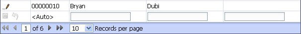
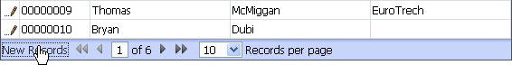

New Records Edit Style
Property name: 'New records edit style' ('Update Settings' pane)
This has two options
-
AlwaysShown - A row for entering a new record is always show for an updateable grid.
 -
ShowOnDemand - A link replaces the edit row to allow showing or hiding the new record row on demand.
